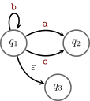
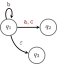
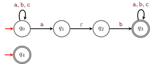
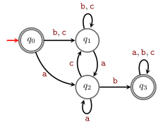
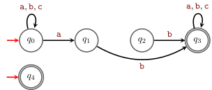

9 Finite Automata
In this chapter we investigate our first couple of computational models: \varepsilon-NFAs and DFAs, and we show their equivalence (Theorem 9.2).
- The phrasing of Definition 9.1 slightly changed. (18/09/2026)
9.1 Nondeterministic Finite Automata
Informally a Nondeterministic Finite Automaton (\varepsilon-NFA) A is a directed graph (with loops) where the edges have labels which are either \varepsilon or some symbol from a given alphabet \Sigma, and there are two sets of distinguished vertices (the initial and final, or accepting states). The set of initial states must be non-empty, but the set of final states may be empty. The graph can have multiple edges between two vertices, and it can have loops (edges from a vertex to itself).
The vertices of the graph are usually called states, the edges transitions.
Initial states are represented with an incoming arrow1 and final states are represented with a double circle.
Example 9.1 Figure 9.1 represents an \varepsilon-NFA with two states (q_0, an initial state and q a final state) and no transitions.
Transitions are represented with arrows, and the label of the transition is written next to the arrow.
Example 9.2 In Figure 9.2, there is a transition from q_1 to itself with label \textcolor{darkred}{\mathtt{b}}, a transition from q_1 to q_3 with label \varepsilon and two transitions from q_1 to q_2 with labels \textcolor{darkred}{\mathtt{a}} and \textcolor{darkred}{\mathtt{c}}. A transition with label \varepsilon is called an \varepsilon-transition. Transitions given by parallel edges are usually written as a single edge with multiple labels, for example the two edges from q_1 to q_2 in Figure 9.2 can be represented as a single edge with label \textcolor{darkred}{\mathtt{a}},\textcolor{darkred}{\mathtt{c}} (as in Figure 9.3).


Notice that Figure 9.2 and Figure 9.3 are not \varepsilon-NFAs since there are no marked initial states.
Formally, an \varepsilon-NFA is given by a tuple (Q,\Sigma,I,F,\delta) where
- Q is a finite set of states (the set of vertices in the directed graph);
- \Sigma is the alphabet of possible simbols occurring as labels of the edges;
- I (non-empty) and F are subsets of Q, resp. the initial and final states;2
- \delta \subseteq Q\times (\Sigma\cup\{\varepsilon\})\times Q is a relation (called transition relation) describing the labels of the edges of the graph: the edge (q,q') has label \textcolor{darkred}{\mathtt{s}} if and only if (q,\textcolor{darkred}{\mathtt{s}},q')\in \delta, and similarly for \varepsilon.
In some texts, an \varepsilon-NFA is defined using a transition function \delta':Q\times (\Sigma\cup \{\varepsilon\})\to \mathscr{P}(Q) instead of a transition relation \delta \subseteq Q\times (\Sigma\cup\{\varepsilon\})\times Q. This is just a matter of notation, it is immediate to translate from one notation to the other: given \delta' we have that \delta=\{(q,\textcolor{darkred}{\mathtt{s}},q')\in Q\times (\Sigma\cup\{\varepsilon\})\times Q :q'\in \delta'(q,\textcolor{darkred}{\mathtt{s}}) \} and, viceversa, given \delta, we have that \delta'(q,\textcolor{darkred}{\mathtt{s}})=\{q'\in Q:(q,\textcolor{darkred}{\mathtt{s}},q')\in \delta \}.
We associate a language to an \varepsilon-NFA as follows.
Definition 9.1 The language accepted by an \varepsilon-NFA A is \mathscr{L}(A). A word w\in \Sigma^* is in \mathscr{L}(A) if and only if there exist a sequence of states q_1,\dots,q_m in A and s_1,\dots,s_{m-1}\in \Sigma\cup\{\varepsilon\} s.t.
- q_1 is an initial state of A;
- q_m is a final state of A;
- for each i\in \{1,\dots, m-1\}, (q_i,s_i,q_{i+1}) is in the transition relation of A, that is (q_i,q_{i+1}) is an edge in A with label s_i; and
- the concatenation s_1\cdots s_{m-1} gives the word w.
The path q_1,\dots,q_m is an accepting path for w in A.
Example 9.3 Consider the following \varepsilon-NFA A over the alphabet \Sigma=\{\textcolor{darkred}{\mathtt{a}},\textcolor{darkred}{\mathtt{b}},\textcolor{darkred}{\mathtt{c}}\}:

What is the language \mathscr{L}(A) accepted by the \varepsilon-NFA A in Figure 9.4?
Exercise 9.1 (Simple (almost trivial) \varepsilon-NFAs) Contruct \varepsilon-NFAs for the following languages:
- \emptyset.
- \{\varepsilon\}.
- \{\textcolor{darkred}{\mathtt{s}}\} where \textcolor{darkred}{\mathtt{s}}\in \Sigma.
Exercise 9.2 Construct \varepsilon-NFAs accepting the following languages:
- The language consisting of a single word: \textcolor{darkred}{\mathtt{101}};
- The language of all words in \{\textcolor{darkred}{\mathtt{0}},\textcolor{darkred}{\mathtt{1}}\}^* starting with \textcolor{darkred}{\mathtt{101}};
- The language of all words in \{\textcolor{darkred}{\mathtt{0}},\textcolor{darkred}{\mathtt{1}}\}^* ending with \textcolor{darkred}{\mathtt{101}};
- The language of all words in \{\textcolor{darkred}{\mathtt{0}},\textcolor{darkred}{\mathtt{1}}\}^* containing \textcolor{darkred}{\mathtt{101}} as a subword.
Exercise 9.3 Given an \varepsilon-NFA A, show that there exists an \varepsilon-NFA B with exactly one initial and one final state s.t. \mathscr{L}(A)=\mathscr{L}(B).
Exercise 9.4 (Operations on \varepsilon-NFAs) Given \varepsilon-NFAs A and B,
- construct an \varepsilon-NFA accepting \mathscr{L}(A)\cup\mathscr{L}(B).
- construct an \varepsilon-NFA accepting \mathscr{L}(A)\cdot\mathscr{L}(B).
- construct an \varepsilon-NFA accepting \mathscr{L}(A)^*.
9.2 Deterministic Finite Automata
The next computational model is a special case of \varepsilon-NFAs.
Definition 9.2 An \varepsilon-NFA A is deterministic, aka it is a Deterministic Finite Automaton (DFA) if
- there is exactly one initial state,
- there are no edges with label \varepsilon and
- for every state there is exactly one outgoing edge with label \textcolor{darkred}{\mathtt{s}} for each \textcolor{darkred}{\mathtt{s}}\in \Sigma.
Formally, a DFA is given by a tuple (Q,\Sigma,I,F,\delta) where
- Q is a finite set of states (the set of vertices in the directed graph);
- \Sigma is the alphabet of possible simbols occurring as labels of the edges;
- I and F are subsets of Q and I has size one;
- \delta: Q\times \Sigma\to Q is a function (called transition function) describing the labels of the edges of the graph: the edge (q,q') has label \textcolor{darkred}{\mathtt{s}} if and only if q'= \delta(q,\textcolor{darkred}{\mathtt{s}}).
Example 9.4 As an example, let’s give a DFA accepting the same language as the \varepsilon-NFA A in Figure 9.4, that is all the words over \{\textcolor{darkred}{\mathtt{a}},\textcolor{darkred}{\mathtt{b}},\textcolor{darkred}{\mathtt{c}}\} with at least an occurrence of \textcolor{darkred}{\mathtt{ab}} or the word \varepsilon.

The state q_2 marks the fact that we have seen an \textcolor{darkred}{\mathtt{a}} and we are waiting for a \textcolor{darkred}{\mathtt{b}} to accept the word. The state q_3 marks the fact that we have seen an \textcolor{darkred}{\mathtt{ab}} and hence we can accept any continuation of the word. The state q_1 marks the fact that we have seen some symbol, but not an \textcolor{darkred}{\mathtt{a}} yet, or that we have seen an \textcolor{darkred}{\mathtt{a}} but it was not followed by a \textcolor{darkred}{\mathtt{b}}. The state q_0 is just to accept \varepsilon.
In an \varepsilon-NFA A, to check whether a given word w is in \mathscr{L}(A) or not we might need to check exponentially many paths, but given a path that supposedly shows that w\in \mathscr{L}(A) it is easy to check it is indeed a correct witness.
The “N” in NFA and in \mathbf{NP} refer to the same phenomenon, the nondeterminism.
For a DFA B checking whether a given word w is in \mathscr{L}(B) is trivial, there is always exactly one path starting from the initial state whose labels once concatenated give the word w. If this path ends in an final state, then w\in \mathscr{L}(L), otherwise w\notin\mathscr{L}(L).
Exercise 9.5 (Operations on DFAs) Given a DFA A and a homomorphism \sigma,
- construct a DFA accepting \overline{\mathscr{L}(A)}.
- construct an \varepsilon-NFA accepting \mathscr{L}(A)^R.
- (🔥) construct a \varepsilon-NFA accepting \sigma(\mathscr{L}(A)).
- (🔥) construct an \varepsilon-NFA accepting \sigma^{-1}(\mathscr{L}(A)).
9.3 Equivalence
In this section we show that we can simplify \varepsilon-NFAs, to get equivalent NFAs (i.e. \varepsilon-NFA without \varepsilon-transitions), and DFAs. The price to pay in the first case is to have more transitions, and in the second case to have a potentially exponentially larger number of states.
Theorem 9.1 For every \varepsilon-NFA A, there exists an \varepsilon-NFA B without \varepsilon transitions s.t. \mathscr{L}(A)=\mathscr{L}(B).
Example 9.5 The construction in the proof of Theorem 9.1 when applied to the \varepsilon-NFA in Figure 9.4 gives the following NFA:

Exercise 9.6 Complete the proof of Theorem 9.1 proving that \mathscr{L}(A)\subseteq\mathscr{L}(B).
Exercise 9.7 The proof of Theorem 9.1 is algorithmic and gives a way to construct B.
- Describe an algorithm that on input q\in Q finds all the q' s.t. q\stackrel{\varepsilon^*}{\to} q'.
- Following the argument in the proof of Theorem 9.1 give an explicit algorithm to construct B. What is the cost of this algorithm w.r.t. the size of the input \varepsilon-NFA A?
The set of all q' s.t. q\stackrel{\varepsilon^*}{\to} q' is called \varepsilon-closure of q.
Exercise 9.8 The construction used to prove Theorem 9.1 is called “backward closure” since we try to apply all \varepsilon-transitions before normal transitions. What would change in the argument if we wanted to use a “forward closure”, that is try to apply all \varepsilon-transitions after normal transitions?
Theorem 9.2 For every \varepsilon-NFA A, there exists a DFA B s.t. \mathscr{L}(A)=\mathscr{L}(B).
The construction in the proof of Theorem 9.2 is called powerset construction or determinization.
Example 9.6 As an example let’s apply the powerset construction to the \varepsilon-NFA A in Figure 9.4. First we obtain an NFA eliminating all the \varepsilon-transitions from A and we obtain the NFA C in Figure 9.6. Since C has 5 states, applying the construction of Theorem 9.2 to the NFA C leads to a DFA B with 2^5=32 states. It is obvious that most of them will be redundant, for example already in C the state q_2 is useless since it has no incoming transition.
The DFA B coming out of the construction in Theorem 9.2 (without writing states unreachable from the initial state) is
Exercise 9.9 (🌱) Just looking at Figure 9.7, construct a DFA with 4 states that accepts the same language. Chech that the DFA you constructed is isomorphic4 to the one in Figure 9.5.
Exercise 9.10 Based on the proof of Theorem 9.2 and Example 9.6 give an explicit algorithm that given as input an \varepsilon-NFA gives as output an equivalent DFA. What is the worst case cost of the algorithm w.r.t. the number of states of the \varepsilon-NFA gives as input?
Exercise 9.11 Given n\in \mathbb N, consider the language L_n=\{x\textcolor{darkred}{\mathtt{a}}y :x,y\in \{\textcolor{darkred}{\mathtt{a}},\textcolor{darkred}{\mathtt{b}}\}^* \land |y|=n\}\ , that is, L_n is the set of all words over \{\textcolor{darkred}{\mathtt{a}},\textcolor{darkred}{\mathtt{b}}\} with an \textcolor{darkred}{\mathtt{a}} in the n+1-th position from the end of the word.
- Write an \varepsilon-NFA A with n+2 states s.t. \mathscr{L}(A)=L_n.
- Write a DFA B with 2^{n+1} states s.t. \mathscr{L}(B)=L_n.
9.4 The cartesian product construction
There is another famous construction in DFA theory: the cartesian product construction. This procedure, given two DFAs A and B, constructs a DFA for \mathscr{L}(A)\cup \mathscr{L}(B). It is just a special case of the powerset construction (were we don’t write unnecessary states).
Example 9.7 (cartesian product construction) Given two DFAs A and B we want to construct a DFA for \mathscr{L}(A)\cup \mathscr{L}(B).
First construct an NFA for \mathscr{L}(A)\cup \mathscr{L}(B): this is trivial, take the two graphs of the DFAs and write them next to each other. This looks mostly like a DFA with the exception that there are two initial states, hence it is a NFA. If we determinize it as in the proof of Theorem 9.2 it is easy to see that the only subsets that we will ever need have size 2 and consists of a state of A and a state of B.
It is also easy to modify the construction above to give a DFA for \mathscr{L}(A)\cap \mathscr{L}(B): compared to the DFA for \mathscr{L}(A)\cup \mathscr{L}(B) the only difference are the final states. In the the DFA for \mathscr{L}(A)\cup \mathscr{L}(B) the final states are of the form \{q,q'\} where q is final in A or q' is final in B. In the DFA for \mathscr{L}(A)\cap \mathscr{L}(B) the final states are of the form \{q,q'\} where q is final in A and q' is final in B.
Exercise 9.12 Given DFAs A and B give an algorithm to compute a DFA for \mathscr{L}(A)\,\Delta\,\mathscr{L}(B) (\Delta denotes the symmetric difference of two sets, see Chapter 1).
In this notes, we draw the incoming arrow of initial states in red for readability.↩︎
Notice that we are not asking for I and F to be disjoint, actually, often they will have a non-trivial intersection.↩︎
This is only done to have a nice concise definition of B. Algorithmically, we only add states to Q' when we encounter them, that is when we have a transition to them.↩︎
Two DFAs are isomorphic if up to renaming of vertices they are the same.↩︎